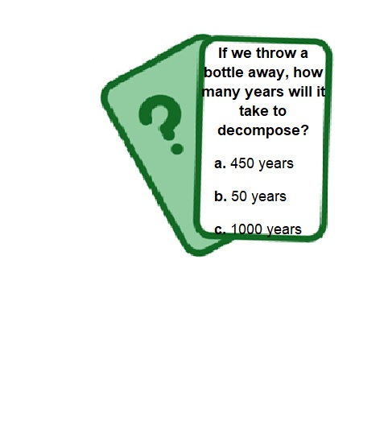

Earth Guardians! SdA - Propuesta para el alumnado
A continuación os presento las actividades y tareas que realizaremos en esta Situación de Aprendizaje sobre el medio ambiente, Earth Guardians. Mucho ánimo y... ¡a por todas!
A continuación os presento las actividades y tareas que realizaremos en esta Situación de Aprendizaje sobre el medio ambiente, Earth Guardians. Mucho ánimo y... ¡a por todas!
3 o 4 sesiones aproximadamente
Actividad de presentación. Comprensión, expresión e interacción oral. Big Yellow Taxi.
Con el fin de abordar el tema de una forma especialmente motivadora, escucharemos la canción de la activista y cantante de folk Joni Mitchell "Big Yellow Taxi" (1970), uno de los himnos de protesta más influyentes de su época, cuya letra aborda explícitamente importantes preocupaciones medioambientales; en definitiva, una cuestión que afecta directamente a la sociedad actual.
De hecho, en una entrevista con el periodista Alan McDougall, la artista defendió lo siguiente:
I wrote ‘Big Yellow Taxi’ on my first trip to Hawaii. I took a taxi to the hotel, and when I woke up the next morning, I threw back the curtains and saw beautiful green mountains in the distance. Then I looked down, and there was a parking lot as far as the eye could see… it completely broke my heart — this blight on paradise. I remember thinking that if people keep paving over places like this, we will lose something irreplaceable. That’s when I sat down and wrote the song.
Joni Mitchell
Una vez hayáis escuchado y analizado el éxito, llevaremos a cabo un debate y reflexión grupal, de manera que os animéis a expresar vuestras opiniones sobre temas íntimamente relacionados con nuestra realidad más próxima. Aquí propongo algunos temas para reflexionar:
A partir del vocabulario que aparece en la propia canción aprenderemos más términos relacionados con el medioambiente. A continuación explicito la lista de definiciones:
Small, rocky object that orbits the Sun
cCange in Earth’s weather patterns—like temperature, rainfall, and seasons—mainly caused today by human activities
Long period of time with little or no rain
Shaking of the ground
Unusual or severe weather events—such as very strong storms, floods, or hurricanes—that are much more intense or happen less often than normal
Large, uncontrolled fire that spreads quickly through forests or wild areas, burning trees, plants, and wildlife
Plastic material—like bags, bottles, and packaging—that is thrown away and can pollute the environment
Introduction of harmful substances into the environment causing damage to the ecosystem
Large ocean waves
Opening in the Earth’s surface where molten rock, ash, and gases can escape, sometimes causing eruptions
To damage something so badly
To make the air, water, or land dirty and harmful
To keep someone or something safe
To collect and process used materials
To make something smaller
To use something again instead of throwing it away
To get rid of something
Relaciona cada tarjeta con su pareja.
Relaciona cada tarjeta con su pareja.
","showMinimize":false,"itinerary":{"showClue":false,"clueGame":"","percentageClue":40,"showCodeAccess":false,"codeAccess":"","messageCodeAccess":""},"cardsGame":[{"url":"resources/3-Things-To-Throw-Away-And-When-.jpeg","x":0,"y":0,"author":"","alt":"","audio":"","color":"#000000","backcolor":"#ffffff","eText":"","urlBk":"","xBk":0,"yBk":0,"authorBk":"","altBk":"","audioBk":"","colorBk":"#000000","backcolorBk":"#ffffff","eTextBk":"THROW%20AWAY"},{"url":"resources/protect-earth-cartoon-illustration-png.png","x":0,"y":0,"author":"","alt":"","audio":"","color":"#000000","backcolor":"#ffffff","eText":"","urlBk":"","xBk":0,"yBk":0,"authorBk":"","altBk":"","audioBk":"","colorBk":"#000000","backcolorBk":"#ffffff","eTextBk":"PROTECT"},{"url":"resources/SS-KH_recycling-symbols-what-they-mean-ART2.jpg","x":0,"y":0,"author":"","alt":"","audio":"","color":"#000000","backcolor":"#ffffff","eText":"","urlBk":"","xBk":0,"yBk":0,"authorBk":"","altBk":"","audioBk":"","colorBk":"#000000","backcolorBk":"#ffffff","eTextBk":"RECYCLE"},{"url":"resources/Massive-Volcanic-Eruption-Lava-Illustration.jpg","x":0,"y":0,"author":"","alt":"","audio":"","color":"#000000","backcolor":"#ffffff","eText":"","urlBk":"","xBk":0,"yBk":0,"authorBk":"","altBk":"","audioBk":"","colorBk":"#000000","backcolorBk":"#ffffff","eTextBk":"VOLCANO"},{"url":"resources/170501-airpollution-stock.jpg","x":0,"y":0,"author":"","alt":"","audio":"","color":"#000000","backcolor":"#ffffff","eText":"","urlBk":"","xBk":0,"yBk":0,"authorBk":"","altBk":"","audioBk":"","colorBk":"#000000","backcolorBk":"#ffffff","eTextBk":"POLLUTION"},{"url":"resources/6ZW3VY5dZJbYSD7FeAsKe6.jpg","x":0,"y":0,"author":"","alt":"","audio":"","color":"#000000","backcolor":"#ffffff","eText":"","urlBk":"","xBk":0,"yBk":0,"authorBk":"","altBk":"","audioBk":"","colorBk":"#000000","backcolorBk":"#ffffff","eTextBk":"CLIMATE%20CHANGE"},{"url":"resources/terremoto-9-feb.jpg","x":0,"y":0,"author":"","alt":"","audio":"","color":"#000000","backcolor":"#ffffff","eText":"","urlBk":"","xBk":0,"yBk":0,"authorBk":"","altBk":"","audioBk":"","colorBk":"#000000","backcolorBk":"#ffffff","eTextBk":"EARTHQUAKE"},{"url":"resources/plastic.jpg","x":0,"y":0,"author":"","alt":"","audio":"","color":"#000000","backcolor":"#ffffff","eText":"","urlBk":"","xBk":0,"yBk":0,"authorBk":"","altBk":"","audioBk":"","colorBk":"#000000","backcolorBk":"#ffffff","eTextBk":"PLASTIC%20WASTE"},{"url":"resources/waldbrandgefahr-1712513419dId.jpg","x":0,"y":0,"author":"","alt":"","audio":"","color":"#000000","backcolor":"#ffffff","eText":"","urlBk":"","xBk":0,"yBk":0,"authorBk":"","altBk":"","audioBk":"","colorBk":"#000000","backcolorBk":"#ffffff","eTextBk":"FOREST%20FIRE"},{"url":"resources/maxresdefault.jpg","x":0,"y":0,"author":"","alt":"","audio":"","color":"#000000","backcolor":"#ffffff","eText":"","urlBk":"","xBk":0,"yBk":0,"authorBk":"","altBk":"","audioBk":"","colorBk":"#000000","backcolorBk":"#ffffff","eTextBk":"TSUNAMI"},{"url":"resources/0e-05DAdG_2000x1500__1.jpg","x":0,"y":0,"author":"","alt":"","audio":"","color":"#000000","backcolor":"#ffffff","eText":"","urlBk":"","xBk":0,"yBk":0,"authorBk":"","altBk":"","audioBk":"","colorBk":"#000000","backcolorBk":"#ffffff","eTextBk":"ASTEROID"}],"isScorm":0,"textButtonScorm":"Guardar la puntuación","repeatActivity":false,"textAfter":"","version":1.3,"percentajeCards":100,"type":1,"showSolution":true,"timeShowSolution":3,"time":3,"evaluation":false,"evaluationID":"","id":"202642410202-120","msgs":{"msgSubmit":"Enviar","msgClue":"¡Genial! La pista es:","msgCodeAccess":"Código de acceso","msgPlayStart":"Pulse aquí para jugar","msgScore":"Puntuación","msgErrors":"Errores","msgHits":"Aciertos","msgMinimize":"Minimizar","msgMaximize":"Maximizar","msgFullScreen":"Pantalla Completa","msgExitFullScreen":"Salir del modo pantalla completa","msgNoImage":"Pregunta sin imágenes","msgEndGameScore":"Antes de guardar la puntuación comience la partida.","msgScoreScorm":"La puntuación no se puede guardar porque esta página no forma parte de un paquete SCORM.","msgOnlySaveScore":"¡Sólo puede guardar la puntuación una vez!","msgOnlySave":"Sólo puede guardar una vez","msgInformation":"Información","msgYouScore":"Su puntuación","msgAuthor":"Autoría","msgOnlySaveAuto":"Su puntuación se guardará después de cada pregunta. Sólo puede jugar una vez.","msgSaveAuto":"Su puntuación se guardará automáticamente después de cada pregunta.","msgSeveralScore":"Puede guardar la puntuación tantas veces como quiera","msgYouLastScore":"La última puntuación guardada es","msgActityComply":"Ya ha realizado esta actividad.","msgPlaySeveralTimes":"Puede realizar esta actividad cuantas veces quiera","msgClose":"Cerrar","msgAudio":"Audio","msgNumQuestions":"Número de tarjetas","msgTryAgain":"Necesita al menos un %s% de respuestas correctas para conseguir la información. Vuelva a intentarlo.","msgEndGameM":"Has completado el juego. Tu puntuación es %s.","msgUncompletedActivity":"Actividad no completada","msgSuccessfulActivity":"Actividad superada. Puntuación: %s","msgUnsuccessfulActivity":"Actividad no superada. Puntuación: %s","msgTypeGame":"Relaciona","msgCheck":"Comprobar","msgRestart":"Reiniciar"}}Juego interactivo.
Actividad de evaluación:
Una vez nos hemos familiarizado con la primera condicional al trabajarla en la Actividad 1 y practicarla en el debate grupal, realizaremos un pequeño quiz para afianzar su estructura y uso en contexto:
Comprensión oral. Mediación.
A continuación veremos un vídeo publicado por National Geographic en su canal de YouTube titulado "Causas y efectos del cambio climático". Después de haberlo comprendido y haber tomado las notas que consideréis pertinentes, deberéis mediar la información proporcionada. Para ello, habréis de escribir un pequeño texto en inglés destacando los puntos e ideas principales del vídeo con vuestras propias palabras.
Expresión e interacción escrita.
Actividad de evaluación:
La última actividad de esta primera tarea consistirá en una ejercicio colaborativo. Para ello, crearé un mural en Padlet donde deberéis compartir vuestra opinión acerca del vídeo proyectado en la Actividad 4 y responder a al menos dos de las contribuciones de vuestros compañeros de manera respetuosa, practicando así una buena netiqueta y la primera condicional en contexto. Aquí tenéis un ejemplo que os servirá para daros ideas:
I think the planet will be destroyed little by little if we don’t take action. If people cut down forests, kill animals, and pollute the air, the situation will get worse. If we don’t do anything, the Earth will not be a good place to live in the future. We must take care of our planet before it’s too late.
I agree with you Elisa. I think that if human beings continue causing environmental problems, we will not be able to ignore them. If climate change continues, it will destroy lots of biodiversity and green areas every year, so we must stop it.
| Excelente | Bien | Satisfactorio | Necesita mejorar | Suspenso | |
|---|---|---|---|---|---|
| Gramática | Incluye todas las estructuras esperadas y están correctamente utilizadas (2.5) | Incluye algunas de las estructuras esperadas y, en general, están correctamente utilizadas. (1.75) | Incluye pocos tiempos verbales y estructuras, con errores evidentes. (1.50) | Todos los contenidos gramaticales están incorrectamente utilizados. (1.25) | Sin entregar o uso claro de IA (0) |
| Vocabulario | Incluye un uso rico y variado del vocabulario de la unidad, relacionado con el tema y sin repeticiones. (2.5) | Incluye algunas palabras con algunos errores en el uso o con vocabulario poco amplio. (1.75) | Incluye vocabulario básico, con algo de repetición o uso incorrecto. (1.50) | Incluye vocabulario limitado, muy básico o inexacto. (1.25) | Sin entregar o uso claro de IA (0) |
| Mensaje mendioambiental | Explica claramente el impacto humano en la naturaleza; promueve firmemente la concienciación y la acción ecológica. (2.5) | Menciona el impacto humano; mensaje medioambiental moderadamente claro. (1.75) | Mensaje medioambiental breve o poco desarrollado; débil conexión con la vida real. (1.50) | Conciencia medioambiental poco clara o inexistente. (1.25) | Sin entregar o uso claro de IA (0) |
| Interacción, registro y netiqueta | Respetuoso, apropiado para su publicación y acorde al tono de redes sociales. (2.5) | Mayormente respetuoso y adecuado. (1.75) | Aceptable, aunque algo irrespetuoso. (1.50) | Tono inapropiado o irrespetuoso. (1.25) | Sin entregar o uso claro de IA (0) |
3 sesiones aproximadamente
Juego: eco-trivial
¡A jugar! Con este trivial reflexionaremos más aún sobre los peligros y el daño que los problemas mediaombientales actuales están provocando en el entorno. De este modo os será más fácil reconocerlos y tomar acción. Podéis jugar individualmente o por parejas, aunque comentaremos las respuestas en conjunto.

Expresión escrita
Actividad de evaluación:
En relación con la última pregunta del quiz anterior (acerca de la creación de inventos), trabajaréis en pequeños grupos de tres o cuatro miembros para crear el vuestro: un eco-invento que ayude a solucionar un problema medioambiental de la vida real. Para ello deberéis diseñar una infografía explicando los siguientes aspectos y enviármela por el canal de TEAMS:
En esta actividad... ¡la imaginación no tiene límite!, pero recordad que habréis de dialogar educadamente con vuestros compañeros de equipo en la toma de decisiones.
| Excelente | Bien | Satisfactorio | Necesita mejorar | Suspenso | |
|---|---|---|---|---|---|
| Identificación del problema | El problema está claramente explicado, es relevante (2) | El problema es claro (1.75) | El problema es poco claro o falta información (1.50) | No se entiende el problema o no está incluido (1.25) | Sin entregar o uso claro de IA (0) |
| Diseño del invento | Nombre creativo, diseño detallado y solución muy adecuada y ecológica (2) | Nombre y diseño claros, solución adecuada (1.75) | Diseño simple o poco relacionado con el problema (1.50) | No hay diseño claro o no responde al problema (1.25) | Sin entregar o uso claro de IA (0) |
| Funcionamiento | Explicación muy clara de qué hace y cómo funciona; impacto ambiental bien explicado (2) | Explica qué hace y cómo funciona de forma clara (1.75) | Explicación incompleta o confusa (1.50) | No se entiende cómo funciona (1.25) | Sin entregar o uso claro de IA (0) |
| Beneficios futuros (First Conditional) | Uso correcto y variado del first conditional (3 o más ejemplos) (2) | Uso correcto con algunos ejemplos (2) (1.75) | Uso limitado o con errores (1 ejemplo) (1.50) | No usa el first conditional o es incorrecto (1.25) | Sin entregar o uso claro de IA (0) |
| Infografía (Productro Visual) | Muy organizado, atractivo, completo (2) | Organizado y completo (1.75) | Poco organizado o incompleto (1.50) | Desordenado o falta mucha información (1.25) | Sin entregar o uso claro de IA (0) |
3 o 4 sesiones aproximadamente
Eco-Quest: the Green Adventure Challenge. Comprensión escrita, interacción oral y mediación.
Actividad de evaluación:
Para llevar a cabo este reto, llevaremos a cabo una pequeña "búsqueda del tesoro" en la biblioteca. Allí os encontraréis con seis estaciones de aprendizaje; en cada una de ellas contaréis con algunos libros y una tablet que usaréis para buscar la información requerida. Los aspectos sobre los que deberéis investigar están íntimamente relacionados con amenazas ecológicas de hoy en día. A continuación os adelanto algún ejemplo:
Divididos en grupos de cuatro, tendréis cinco minutos para investigar y comprobar si las dos afirmaciones que encontraréis en cada estación son verdaderas o falsas. Vuestra respuesta final habrá de estar avalada por una fuente fiable (Google Scholar, National Geographic, webs oficiales...), de modo que os acostumbréis a verificar información, analizar fuentes y acceder a sitios web fidedignos.
Cada vez que el cronómetro online explote deberéis rotar a la siguiente estación. Una vez finalizada la actividad, comentaremos las respuestas en grupo y analizaremos aspectos como:
¿Qué aspectos fueron los más difíciles de verificar? / ¿Qué fuentes son las más fiables? / ¿Por qué es importante contrastar la información que obtenemos de internet?
Expresión e interacción oral: speed-dating.
Para esta actividad formaréis dos filas (de modo que una quede en frente de la otra) y rotaréis para hablar con un compañero o compañera distinto cada minuto, cuando marque el cronómetro en línea, cambiando a su vez de tema de conversación. ¡No olvidéis tomar nota de las opiniones que intercambiáis! ya que al final las discutiremos en conjunto.
Como podéis comprobar, todos ellos giran en torno a pequeñas acciones que podemos adoptar día a día tanto en casa como en el centro y reducir así el impacto que ejercemos sobre el medio ambiente.
Expresión oral.
Actividad de evaluación:
Con la información y contenidos aprendidos a lo largo de la SdA, trabajaréis en parejas sobre uno de los hechos trabajados en la Actividad 1 (Tarea 3). Así pues, deberéis llevar a cabo una labor de investigación sobre el tema a fin de grabar vuestro propio podcast. Este deberá tener una duración máxima de 2 minutos. Para comprobar que accedéis únicamente a información seria y fidedigna, tendréis que citar al menos dos de las fuentes consultadas.
Además, y teniendo en cuenta las ideas que habéis compartido a lo largo de la actividad anterior, vuestro podcast tendrá que incluir algunas acciones a poner en práctica para dar solución a dichas problemáticas ambientales actuales y reducir así el devastador impacto ejercido por el ser humano sobre el medio ambiente. Los proyectos resultantes serán grabados y difundidos gracias al equipo de radio del centro para compartirlas con toda la comunidad educativa. Así, me los enviaréis por el canal de TEAMS y pasarán a formar parte del proyecto EduCast.
| Excelente | Bien | Satisfactorio | Necesita mejorar | Suspenso | |
|---|---|---|---|---|---|
| Investigación y uso de fuentes | Información muy completa, rigurosa y bien explicada; integra y cita correctamente 2 o más fuentes fiables y relevantes (2) | Información adecuada y clara; cita al menos 2 fuentes con pequeños errores (1.75) | Información limitada; solo cita 1 fuente o las fuentes son poco fiables (1.50) | Información incorrecta o superficial; no cita fuentes (1.25) | Sin entregar o uso claro de IA (0) |
| Análisis del problema ambiental | Explica claramente causas, consecuencias y relevancia del problema (2) | Explica el problema con claridad (1.75) | Explicación superficial o incompleta (1.50) | No se entiende el problema (1.25) | Sin entregar o uso claro de IA (0) |
| Propuestas de solución | Presenta varias soluciones realistas, creativas y bien justificadas (2) | Presenta algunas soluciones adecuadas (1.75) | Soluciones poco claras o poco realistas (1.50) | No propone soluciones (1.25) | Sin entregar o uso claro de IA (0) |
| Expresión oral | Pronunciación clara, fluidez y vocabulario adecuado (2) | Buena pronunciación con pequeños errores (1.75) | Dificultades de fluidez o pronunciación (1.50) | Difícil de entender (1.25) | Sin entregar o uso claro de IA (0) |
| Gramática y vicabulario | Uso muy correcto de gramática y vocabulario; variedad de estructuras; casi sin errores (2) | Uso adecuado con algunos errores menores que no dificultan la comprensión (1.75) | Errores frecuentes que afectan parcialmente la comprensión (1.50) | Muchos errores que dificultan la comprensión (1.25) | Sin entregar o uso claro de IA (0) |
El trabajo titulado "Earth Guardians! SdA - Propuesta para el alumnado" de Elisa Suárez está bajo la licencia Creative Commons Reconocimiento-CompartirIgual 4.0 Internacional (CC BY-SA 4.0). Más información: https://creativecommons.org/licenses/by-nc-nd/4.0/

| Título | Earth Guardians! SdA - Propuesta para el alumnado |
|---|---|
| Descripción | Situación de Aprendizaje 3º ESO |
| Autoría | Elisa Suárez |
| Licencia | Creative Commons BY-SA 4.0 |
Este contenido fue creado con eXeLearning, el editor libre y de fuente abierta diseñado para crear recursos educativos.
Obra publicada con Licencia Creative Commons Reconocimiento Compartir igual 4.0
{kind=link}
{kind=link}
{kind=link}
{kind=link}
{kind=link}
{kind=link}
{kind=link}
{kind=link}
{kind=link}
{kind=link}
{kind=link}